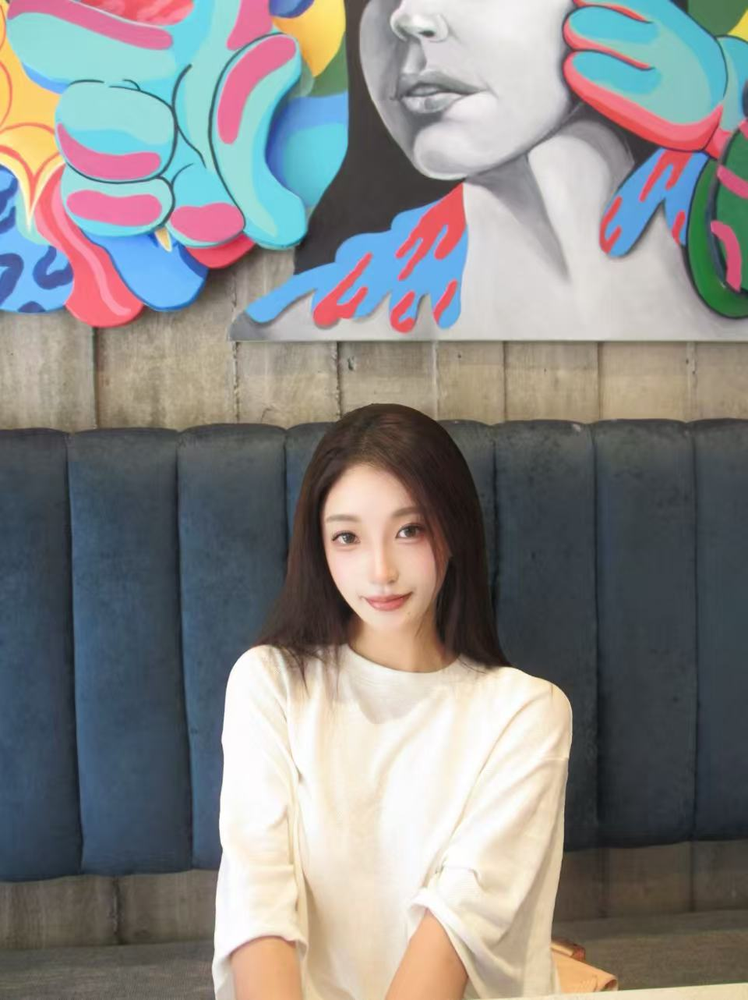

绘画
《Center Street》
水彩与彩铅，2021，300 × 300 mm。城市街道在黄昏光线中的色彩与透视练习。
创作笔记、展览观察与生活碎片
绘画 · 摄影 · 数字艺术 · 混合媒介
水彩与彩铅，2021，300 × 300 mm。城市街道在黄昏光线中的色彩与透视练习。
水彩与彩铅，2021，300 × 300 mm。对日常餐食静物的观察与色彩表现。
丙烯，2021，500 × 500 mm。以放大镜与花卉为符号，探讨观看与被观看的平行关系。
水彩、杂志拼贴与马克笔，2021。将日常图像与梦境叙事叠加的拼贴绘画。
速写本水彩与马克笔，2021。街角的郁金香与出租车，捕捉城市一瞬的明亮。
油画，2023，50 × 60 cm。Brock University Visa Gallery 展出。以簪花女群像探索传统与当代身份。
油画双联画，2024，40 × 50 cm × 2。徐州中心医院展览。以心脏与玫瑰、浆果并置，诉说生命与情感。
油画三联画，2024，30 × 40 cm × 3。徐州 Alright Coffee 展览。冬日幻境中的色彩变奏。
丙烯圆形画布，2024，三件一组。Brock University 展出。用流动的色彩轨迹记录身体运动与情绪方向。
锡箔、泡沫板、丙烯，2021，300 × 300 mm。以冰川与北极熊为意象，回应气候与环境议题。
立体书，2023，50 × 60 cm。Brock University 展出。以弹出结构让蝴蝶与花卉从页面中生长出来。
陶瓷装置，2025。一组手工釉彩花瓶与小型陶塑，探索器物与空间的美感。
摄影，2021。将中国邮政信箱与“GET OUT OF THE STANDARD”传单并置，反思容貌焦虑与社会标准。
海报/明信片设计，2022。以放射状线条打破常规边界，呼吁跳出固定思维模式。
明信片设计，2021。采集不同国家人群的面部轮廓并由 AI 重叠生成，呼吁跳出单一审美标准。
塑料板雕刻与印刷，2021。以强烈黑白对比想象核污染下的变异生物，警示环境危机。

我叫 Ruixin Sun，来自中国江苏徐州。我是一名视觉艺术创作者与策展人，目前就读于香港城市大学创意媒体专业（策展方向），毕业于加拿大布鲁克大学视觉艺术（艺术工作室）专业。
我的创作横跨绘画、摄影、数字艺术与策展，关注情感表达、身体经验与当代视觉文化。我相信艺术不仅是观看的对象，更是人与人、人与空间建立连接的媒介。
2024 年，我在江苏省首届胸痛中心艺术展“心跳节律：艺术的召唤”中获得一等奖，也曾在徐州美术馆、徐州广电及江苏易点通传媒参与展览执行与内容创作工作。
展览合作、作品收藏、艺术交流，欢迎随时联系我。